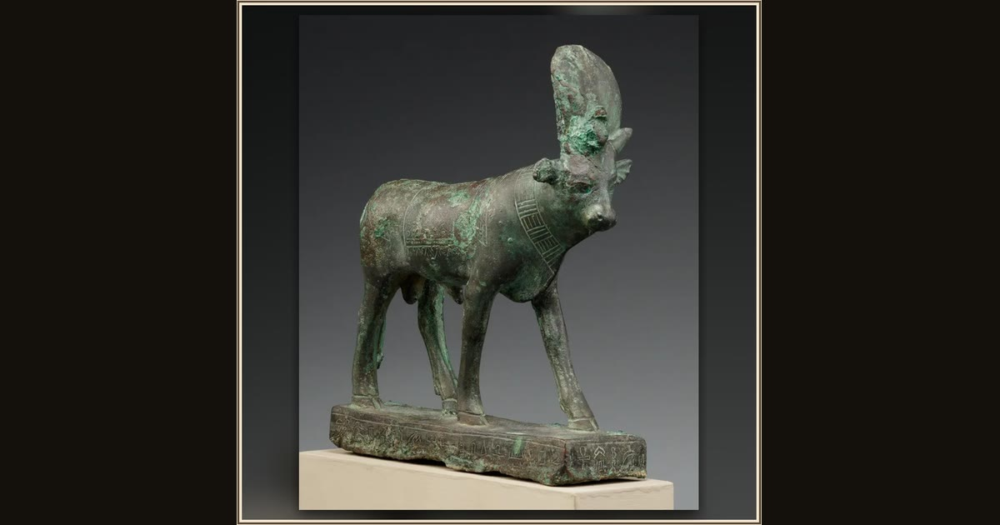

Apis with an inscription invoking Ptah for the benefit of Pasheryta[...] whose mother was Isetemhat
Late Period Dynasty 26–30 · 664–332 BCE · met
A cupreous-metal figure of Apis bears an inscription invoking Ptah; Herodotus says the bull's appearance brought the Egyptians into festival (3.27.1) Explore its place in Herodotus's Histories, Book III, chapter 97.